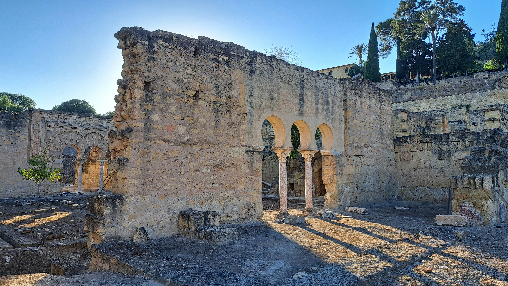

Medina Azahara
Medina Azahara: Entre el Esplendor Andalusí y el Mito de la Ciudad Perdida
Medina Azahara es mucho más que un vestigio del esplendor andalusí; Medinah Azahrâ es también el 'corazón' de un mito que lleva sobre sus espaldas varios siglos de imaginación popular. La urbe erigida en el siglo X por el califa Abd al-Rahman III representaba el poder absoluto y la magnificencia del Califato de Córdoba. Con todo, el trasfondo de su declive, el final del imperio y el saqueo de la ciudad tras la caída del Califato propició una intempestiva desaparición de la ciudad, dando la bienvenida al mito que aún hoy se narra.
Medina Azahara inició un sueño de un líder que la quería convertir en un recuerdo inolvidable. Con un significado de "flor" o, "resplandeciente", estaba diseñada para ser una ciudad donde centralizar el poder administrativo, político y cultural; en definitiva, centro de toda grandeza y belleza. Los jardines, las fuentes y los ricos salones no sólo manifestaban su exquisito diseño arquitectónico, sino que también eran el símbolo del ideal de la perfección y el poder.
La historia de Medina Azahara, no obstante, se conecta con la leyenda de la "ciudad perdida". La tradición oral indica que un sabio habría advertido al califa sobre las consecuencias de su excesiva ambición, justo cuando la ciudad se encontraba a puertas del ineludible efímero esplendor. La maldición como profecía se basaba precisamente en que la grandeza de la ciudad no duraría y, por tanto, su fulgor sería presenció un breve ciclo de esplendor. La historia de Medina Azahara se había enlazado, pues, con la percepción legendaria de la "ciudad perdida". Y es que tras la caída del Califato de Córdoba, la ciudad no solo fue asaltada, sino que, según la leyenda, habría caído en manos de una fuerza terrible que la habría ocultado del planeta.
Dicha narrativa del mito confiere un halo de misterio y tragedia a la historia de Medina Azahara. Cuentan que los atrevidos que se adentraban en la búsqueda de las ruinas de la ciudad desaparecieron sin dejar rastro alguno, como si una maldición antigua se encargara de guardar los secretos de la “ciudad perdida”. Esta idea de que la destrucción de Medina Azahara pudiera haber correspondido a un castigo divino a la ciudad por su desobediencia o una advertencia no comprendida, convierte la historia en un relato casi mítico, donde lo real y lo sobrenatural se entrelazan.
A pesar de que en el siglo XX se volvió a implementar el sitio arqueológico una vez más, la leyenda persiste: ¿fue la caída del imperio la que hizo que una magnífica ciudad pasara al olvido o existió otra razón, una especie de fuerza que se encargó de eliminarla? La respuesta a esta pregunta, de hecho, sigue formulándose y generando debate y especulación, por lo que, precisamente, se alimenta la atracción, el ímpetu por Medina Azahara.A pesar de que en el siglo XX se volvió a implementar el sitio arqueológico una vez más, la leyenda persiste: ¿fue la caída del imperio la que hizo que una magnífica ciudad pasara al olvido o existió otra razón, una especie de fuerza que se encargó de eliminarla? La respuesta a esta pregunta, de hecho, sigue formulándose y generando debate y especulación, por lo que, precisamente, se alimenta la atracción, el ímpetu por Medina Azahara.
Medina Azahara, con una historia de poder y de decadencia y de misterio, continúa siendo un eco del esplendor perdido, del inexorable paso del tiempo. La leyenda de la "ciudad perdida", no sólo evoca la fragilidad de la gloria humana, sino que también mantiene viva la magia de una época en la que el arte, la cultura y la ambición para el encuentro del que fue uno de los grandes enigmas de la herencia andalusí.
